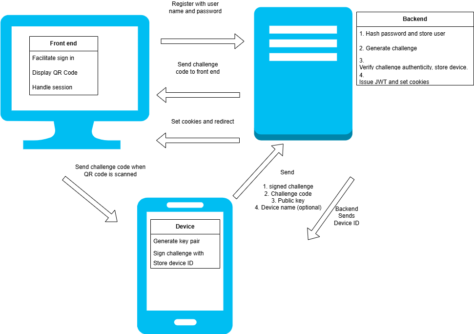
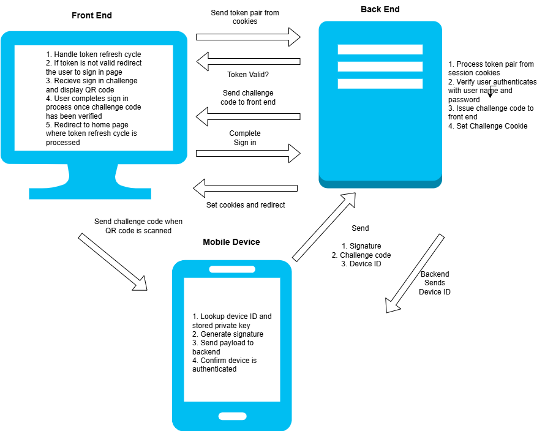

About
The Device Based Authentication focuses on implementing an additional authentication factor through device-based verification. It links a user’s session to a trusted device, such as a mobile phone, which is used to confirm their identity during sign-in. By introducing this second factor, the system strengthens security beyond traditional passwords while maintaining a smooth and user-friendly authentication experience.
This project demonstrates the registration process and the sign in process.
For this demonstration the user is interacting with a web based front end and a mobile Android app.
- First the user registers with a user name and password
- The user is registered and then we move onto the next stage which is device registration
- The user is presented with the challenge code presented as a QR code on the screen
- The QR code is scanned by the camera on the mobile device or entered manually.
- The device is authenticated and registered

Multi-Factor Authentication (MFA)
This project demonstrates Multi-Factor Authentication. We are introducing a second factor of authentication by using the user's device as another factor.
Authentication Factors
- Something you know - Password Based Authentication
- Something you have - Mobile Device Authentication
Authentication Flows
There are two authentication flows that need to be handled.
- Registration Flow - The user registers a user name and password and a device
- Sign-in Flow - The user signs in with user name and password and device verification
Architecture

The following infrastructure components are needed for this project.
- Backend Server to handle registration and sign-in flow and issue tokens
- Database to store users, devices and tokens
- Web based front-end app to handle user interaction
- Android app to handle device registration
Backend Server
The backend server hosts a REST API which is developed using the Python FAST API Framework.
The REST API has endpoints to handle registration (user name / password, device). The backend is responsible for verifying authenticity and redirecting responses to the browser app / user's device.
Database
For this project a local Postgres database is used with the following tables:
- Users - Stores user credentials
- Devices - Stores user devices, including the public key for signing
- Tokens - Stores challenge tokens for managing the authentication state
Web App
This is the front end which I have created using the
The front end is to demonstrate the authentication flow and runs in the browser, allowing the user to register and sign in.
The font end renders the challenge code as a QR code on the screen that the user scans with the camera on their phone.
Device Authenticator App
For this demonstration, I have created an Android App using the Flutter Framework, written in Dart.
The Android App handles the scanning of the QR code and then sends authentication data to the back end for verification.
Once verified the user continues the sign in / registration process from the web app.
Cryptography
Asymmetric Cryptography
Asymmetric Cryptography is used. This is in the form of a private / public key pair which is generated on the device. The private key remains on the device and is used to sign the challenge code to generate a signature
The back end receives the public key, signature and verifies the device authenticity and the user based on the generated challenge code.
The public key is stored in in the devices table so that sign in requests can be verified using the stored public key. The mobile device now only needs to send the device ID and signature as the public key can be retrieved from the device record.
Hashing
User passwords are hashed using the Blowfish Cypher and a 128-bit salt using BCrypt.
Registration Flow

The registration flow handles the user signing up to use the application. These are the steps taken.
- The user registers with a user name and password
- A challenge token is stored by the backend and issued to the user via the browser app
- The challenge code is displayed on the user's screen by the web based app they are interacting with
- The user scans the challenge code (QR code) with their mobile device
- The mobile device opens the app using the deep link encoded and generates a new private key and public key pair
- The device signs the challenge code and generates a signature to prove authenticity of the device
- The device sends a payload containing the signature, challenge code, public key and optional device name
- The backend verifies:
- The challenge code is valid by looking up the token and retrieving the user record
- The device signature using the challenge code and public key
- Once verified the device is registered in the database and the confirmation sent back to the device
- The device stores the device ID for identification when signing up
Sign-in Authentication Flow

The signin flow processes the user signing in using the two authentication factors. These are the steps used.
- The access and refresh tokens stored in cookies in the browser are verified by the backend server via the session endpoint
- If the session is not valid or has expired after validating the access token and running the refresh cycle if required then the sign in process is initiated
- The user signs in with their user name and password using the web based front end
- The user is verified at the backend which generates a new challenge token for sign in
- The backend sets a challenge cookie that is stored in the user's browser
- The web application receives the challenge code and presents a QR code for the user to scan using their registered mobile device
- The Android app is opened using the deep link encoded in the QR code
- The app signs the new challenge using the stored private key and sends a payload containing the registered device ID, the signature and challenge code
- The back end looks up the device which has the public key stored
- The signature is verified to using the challenge code and public key which confirms authenticity of the device
- The token is then validated and if successful then the token is marked as verified in the database
- The device receives confirmation and prompts the user to continue
- The user presses continue in the web app which redirects them to the complete-sign-in endpoint to complete the sign in process
- The endpoint validates the challenge cookie and marks the token as used
- If successful a JWT access and refresh token are issued and stored in the browser by setting session cookies
- The back end redirects to the web applications home page
- The web application reruns the JWT access / refresh cycle by calling the session endpoint at the backend
Backend REST API
│ main.py
│
├───data
│ │ db.py
│ │ db_setup.py
│ │ models.py
│ │ schemas.py
│
├───routes
│ │ auth_routes.py
│
├───services
│ │ auth.py
│ │ auth_exceptions.py
│ │ token.py
│ │ utils.py
The backend hosts the following endpoints:
- Sign-Up - To handle the initial sign up
- Register Device - To handle registration of the mobile device
- Device Auth - Handles authenticating the device and called from the Android App
- Sign In - To allow sign in and creation of the challenge token to present as a QR code
- Complete Sign In - To complete the sign-in flow once the device is authenticated
- Session and Refresh Endpoints - These are to get the session and issue tokens
- Device Redirect - Redirects to the mobile device after the QR code is scanned
- Terms and Conditions - Allows terms and conditions to be accepted
View the API Documentation
Sign-up Endpoint
This will create a new user in the database the challenge code is generated and stored.
@router.post("/signup", response_model =str, status_code=status.HTTP_201_CREATED)
async def signup_user(user_input : UserInputSchema):
"""
Sign up a User
1. Create user — hash password and insert into users table.
2. Validate input — ensure username/email is unique and meets requirements.
3. Generate device registration challenge — prepare QR / key pair setup.
"""
async with SessionLocal() as session:
try:
user, exists = await User.create_user(session,user_input.user_name,user_input.password)
except Exception as e:
print("ERROR", e)
raise HTTPException(status_code=400,detail="A database error occurred")
if exists:
#If the user exists allow reregistration if no devices exist
#Check registered devices
if len(user.devices) > 0:
raise HTTPException(status_code=409,detail="User already exists and has registered devices")
#Check password matches
password_matches = user.verify_password(user_input.password)
if not password_matches:
raise HTTPException(status_code=401,detail="Password verification failed")
if not user:
raise HTTPException(status_code=400,detail="User not created")
#Insert challenge code into database
try:
challenge_code = await Token.create_challenge(session,user.id,token_type="registration",expires_minutes=180)
if not challenge_code:
raise HTTPException(status_code=400,detail="Challenge code not created")
return challenge_code.token
except Exception as e:
print("VALUE ERROR", e)
raise HTTPException(status_code=400,detail="Unable to set the challenge token")
Device Registration
The challenge sent from the device is validated and the user associated with the code is retrieved.
The signature sent by the device is verified. If it is valid then the device is stored in the database and the device ID sent back.
@router.post("/registerdevice", response_model =int, status_code=status.HTTP_201_CREATED)
async def register_device(reg_input : DeviceRegistrationInput):
#1. Lookup challenge code
async with SessionLocal() as session:
try:
token, user = await Token.validate_challenge(session,reg_input.challenge_code)
except TokenUsed as tu:
print("TOKEN USED", tu)
raise HTTPException(status_code=401,detail="Token is already used")
except TokenExpired as te:
print("TOKEN EXPIRED", te)
raise HTTPException(status_code=401,detail="The token has expired")
except TokenNotFound as tnf:
print("TOKEN NOT FOUND", tnf)
raise HTTPException(status_code=401,detail="Invalid token sent")
#2. Verify signature
if user:
signature_verified = verify_signature(reg_input.public_key,reg_input.signature,reg_input.challenge_code)
if not signature_verified:
raise HTTPException(status_code=401,detail="Signature is not valid")
#3. Check no device is already registered and Register device - Add device record to DB
try:
device = await Device.register_device(session,user.id,reg_input.public_key,reg_input.device_name)
if not device:
raise HTTPException(status_code=422,detail="Device registration failed")
#4. Mark token as used
try:
await token.mark_used(session)
except Exception as e:
raise HTTPException(status_code=422,detail="Unable to mark token as used")
except DeviceAlreadyRegistered as dar:
print("DEVICE IS ALREADY REGISTERED", dar)
raise HTTPException(status_code=401,detail="Device is already registered")
except Exception as e:
print("An unknown error occurred")
raise HTTPException(status_code=400,detail="An unknown error occurred")
return device.id
Device Authentication
This endpoint first looks up the device. Then the signature sent by the mobile device is verified.
If the signature is valid, the token is marked as used and a 200 response is returned, allowing the device to confirm success.
@router.post("/deviceauth", response_model =str, status_code=status.HTTP_200_OK)
async def authenticate_device(device_input : DeviceAuthenticationInputSchema):
"""
Endpoint to authenticate a device
"""
async with SessionLocal() as session:
#1.Get the device
device = await Device.get_by_id(session,device_input.device_id)
if not device:
raise HTTPException(status_code=404,detail="Device not registered")
#2.Verify the signature against the device public key
signature_verified = verify_signature(device.public_key,device_input.signature,device_input.challenge_code)
if not signature_verified:
print("SIGNATURE NOT VALID")
raise HTTPException(status_code=401,detail="Signature not valid")
#3. Get the token and user
try:
token, user = await Token.validate_challenge(session,device_input.challenge_code)
await token.mark_verified(session)
except TokenUsed as tu:
print("TOKEN USED", tu)
raise HTTPException(status_code=401,detail="Token is already used")
except TokenExpired as te:
print("TOKEN EXPIRED", te)
raise HTTPException(status_code=401,detail="The token has expired")
except TokenNotFound as tnf:
print("TOKEN NOT FOUND", tnf)
raise HTTPException(status_code=401,detail="Invalid token sent")
return "successful"
Sign In
Allows a user to sign in. If the user is registered and the password is valid then a challenge code is created and sent back to the frontend app to display.
A cookie is set containing the challenge code which is used to complete the sign up process
@router.post("/signin", response_model =str, status_code=status.HTTP_200_OK)
async def signin_user(response: Response, user_input : UserInputSchema):
"""
Endpoint to handle user sign in.
Takes the user name and password, checks device is registered, validates user password, sets challenge cookie
"""
async with SessionLocal() as session:
#1.Check user is registered
user = await User.get_by_user_name(session,user_input.user_name)
if not user:
raise HTTPException(status_code=404,detail="User not found")
#Check the devices is more than one which means they have registered
device_list = list(user.devices)
if not (len(device_list) > 0 and check_active_device_exists(device_list)):
raise HTTPException(status_code=404,detail="Could not find active device")
#2. Verify the user password
password_valid = user.verify_password(user_input.password)
if not password_valid:
raise HTTPException(status_code=401,detail="Password authentication failed")
#3. Create a challenge for device authentication
challenge = await Token.create_challenge(session,user.id,"signin",200)
response.set_cookie(
key="challenge_token",
value=challenge.token,
httponly=True,
secure=True, # HTTPS only
samesite="none",
max_age=CHALLENGE_TOKEN_LIFETIME,
)
return challenge.token
Complete Sign In
This is called by the web app to complete the sign in process once the device has been authenticated.
The challenge code from the cookie is validated. If it is valid then the JWT tokens are issued and set within the session cookies.
@router.get("/complete-signin", response_model =str)
async def complete_signin(request : Request):
"""
Completes the sign in process by verifying the device has been authenticated and issues a JWT pair then redirects.
"""
challenge_cookie = request.cookies.get("challenge_token")
async with SessionLocal() as session:
try:
token, user = await Token.validate_challenge(session,challenge_cookie)
if not token.verified:
raise HTTPException(status_code=401,detail="Invalid token sent - token is not verified")
#Issue JWT and set session and refresh tokens
jwt_token_pair = obtain_jwt_pair(user.id, user.user_name, user.terms_accepted)
response = RedirectResponse(
url= f"{os.environ.get('CLIENT_REDIRECT')}/home",
status_code=302
)
# Access token cookie
response.set_cookie(
key="access_token",
value=jwt_token_pair["access"],
httponly=True,
secure=True, # HTTPS only
samesite="none",
max_age=ACCESS_TOKEN_LIFETIME,
)
# Refresh token cookie
response.set_cookie(
key="refresh_token",
value=jwt_token_pair["refresh"],
httponly=True,
secure=True,
samesite="none",
max_age=REFRESH_TOKEN_LIFETIME,
)
# Mark the token as used
try:
await token.mark_used(session)
except Exception as e:
raise HTTPException(status_code=422,detail="Unable to mark token as used")
except TokenUsed as tu:
print("TOKEN USED", tu)
raise HTTPException(status_code=401,detail="Token is already used")
except TokenExpired as te:
print("TOKEN EXPIRED", te)
raise HTTPException(status_code=401,detail="The token has expired")
except TokenNotFound as tnf:
print("TOKEN NOT FOUND", tnf)
raise HTTPException(status_code=401,detail="Invalid token sent")
return response
Session and Refresh
These endpoints handle the session and refresh lifecycle.
The session endpoint is responsible for returning the user profile if the token is valid.
The refresh endpoint issues a new token pair is issued and session cookies are set.
@router.get("/session", response_model=UserProfileSchema)
async def get_session(token_data = Depends(validate_jwt)):
response = UserProfileSchema(
id=token_data["user_id"],
accepted_terms = token_data["accepted_terms"],
user_name=token_data["user_name"]
)
return response
@router.post("/refresh")
async def refresh_jwt(request: Request, response: Response, refresh: Optional[RefreshTokenSchema], set_cookie : bool = Query(True)):
"""
Takes the refresh token and issues a new token pair and sets the session cookie
"""
# Fallback to cookie (browser clients)
if not refresh.token:
refresh_token = request.cookies.get("refresh_token")
else:
refresh_token = refresh.token
try:
jwt_token_pair = refresh_jwt_pair(refresh_token)
except RefreshTokenExpiredError as e:
print("Refresh token expired", e)
raise HTTPException(status_code=401, detail="Refresh token expired")
except InvalidRefreshTokenError as e:
print("Refresh token invalid", e)
raise HTTPException(status_code=401, detail="Refresh token invalid")
# Set new cookies
if set_cookie:
response.set_cookie(
key="access_token",
value=jwt_token_pair["access"],
httponly=True,
secure=True,
samesite="none",
max_age=ACCESS_TOKEN_LIFETIME
)
response.set_cookie(
key="refresh_token",
value=jwt_token_pair["refresh"],
httponly=True,
secure=True,
samesite="none",
max_age=REFRESH_TOKEN_LIFETIME
)
return {"status": "refreshed"}
token_pair = TokenSchema(
access_token = jwt_token_pair['access'],
refresh_token = jwt_token_pair['refresh'],
)
return token_pair
Device Redirect
This is a helper endpoint to redirect to the app using the deep link. The device calls this endpoint after scanning the QR code from the camera. The device cannot open the deep link directly so this endpoint facilitates that.
@router.get("/deviceredirect")
def test_mobile_redirect(redirect_url : str | None = Query(True) ):
"""
Test redirection to the scheme
"""
if redirect_url:
response_url = redirect_url
else:
response_url = "uk.chrisbriant.pairauth://pair?token=abc123"
response = RedirectResponse(
url=response_url,
status_code=302
)
return response
Accept Terms and Conditions
I have incorporated the acceptance of the terms and conditions into the authentication flow.
The terms and conditions acceptance is held within the user profile. The session endpoint will return a cookie with this value encoded. When the client reads the acceptance value it can redirect to a page within the application to enable the user to accept the terms and conditions.
The acceptterms endpoint below will update the database with the acceptance and set a new token pair with the updated user profile encoded. The cookie needs to be set again and the data returned for the mobile client.
@router.post("/acceptterms", response_model=UserProfileSchema)
async def accept_terms(response: Response, set_cookie : bool = Query(True), token_data = Depends(validate_jwt)):
"""
Accepts the terms and conditions in the database and then updates the token
"""
try:
await update_terms_accepted(token_data["user_id"])
except Exception as e:
raise HTTPException(status_code=400, detail="Unable to update the terms and conditions.")
#Issue a new JWT with the updated accepted terms
jwt_token_pair = obtain_jwt_pair(token_data["user_id"], token_data["idp"], token_data["alias"], True)
# Set new cookies
if set_cookie:
response.set_cookie(
key="access_token",
value=jwt_token_pair["access"],
httponly=True,
secure=True,
samesite="none",
max_age=ACCESS_TOKEN_LIFETIME
)
response.set_cookie(
key="refresh_token",
value=jwt_token_pair["refresh"],
httponly=True,
secure=True,
samesite="none",
max_age=REFRESH_TOKEN_LIFETIME
)
return UserProfileSchema(
id=token_data["user_id"],
idp= token_data["idp"],
accepted_terms = True,
alias=token_data["alias"]
)